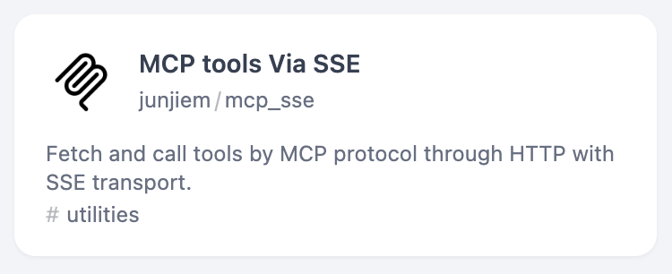
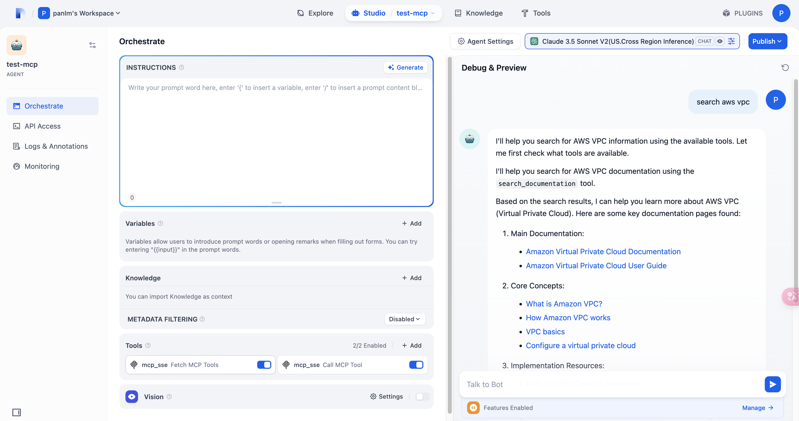

MCP Server on EC2¶
what is mcp-proxy¶
we move mcp servers to ec2 and use mcp-proxy to convert STDIO to SSE, and let mcp client access mcp server through SSE
graph LR
A["LLM Client<br>Cline in VSCode"] <-->|SSE| B1
A <-->|SSE| B2
subgraph EC2["EC2 Instance"]
B1["mcp-proxy"]
C1["Local MCP Server"]
B1 <-->|stdio| C1
B2["mcp-proxy"]
C2["Local MCP Server"]
B2 <-->|stdio| C2
end
style A fill:#ffe6f9,stroke:#333,color:black,stroke-width:2px
style B1 fill:#e6e6ff,stroke:#333,color:black,stroke-width:2px
style C1 fill:#e6ffe6,stroke:#333,color:black,stroke-width:2px
style B2 fill:#e6e6ff,stroke:#333,color:black,stroke-width:2px
style C2 fill:#e6ffe6,stroke:#333,color:black,stroke-width:2px
style EC2 fill:#f0f0f0,stroke:#333,stroke-width:2px
当前 amazon Q Dev CLI 只支持 STDIO协议，不支持 SSE，因此在将 mcp server 放到 EC2 上之后，不仅需要将 mcp server 通过 mcp-proxy 暴露成 SSE，在 Q DEV CLI 本地需要通过 mcp-proxy 将远程 SSE，再转换成本地的 STDIO，提供 Q Dev CLI 访问。如下图：
{kind=link}
手工部署 – start mcp server using mcp-proxy¶
- use mcp-proxy command directly
nohup mcp-proxy --sse-host=0.0.0.0 --sse-port=8808 uvx mcp-server-fetch 2>&1 1>/tmp/mcp-proxy-8808.log & nohup mcp-proxy --sse-host=0.0.0.0 --sse-port=8809 --env FASTMCP_LOG_LEVEL ERROR uvx awslabs.aws-documentation-mcp-server@latest 2>&1 1>/tmp/mcp-proxy-8809.log & nohup mcp-proxy --sse-host=0.0.0.0 --sse-port=8810 --env SEARXNG_URL https://searx.xxx -- docker run -i --rm -e SEARXNG_URL mcp-searxng:latest 2>&1 1>/tmp/mcp-proxy-8810.log &
推荐部署 – put mcp-server in container with mcp-proxy endpoint¶
General MCPs¶
- in this chapter, we will deploy general mcp server for you, including fetch, aws-doc, searxng mcp
- put all files in folder
mymcp -
use mcp-proxy docker file, run mcp-server in container (minor version provider by mcp-proxy)
# git clone https://github.com/sparfenyuk/mcp-proxy cat > mcp-proxy-uv.Dockerfile <<-'EOF' # file: mcp-proxy-uv.Dockerfile FROM ghcr.io/sparfenyuk/mcp-proxy:latest # Install the 'uv' package RUN python3 -m ensurepip && pip install --no-cache-dir uv ENV PATH="/usr/local/bin:$PATH" \ UV_PYTHON_PREFERENCE=only-system ENTRYPOINT [ "mcp-proxy" ] EOF -
customize mcp-proxy docker file, run mcp-server in container (node version)
# git clone https://github.com/ihor-sokoliuk/mcp-searxng cat > mcp-proxy-npx.Dockerfile <<-'EOF' # file: mcp-proxy-npx.Dockerfile FROM node:20-slim # Install Python and required packages RUN apt-get update && apt-get install -y python3 curl \ && rm -rf /var/lib/apt/lists/* # Install uv and mcp-proxy using pipx RUN curl -LsSf https://astral.sh/uv/install.sh | sh RUN ~/.local/bin/uv python install 3.10 RUN ~/.local/bin/uv tool install mcp-proxy # Add pipx binaries to PATH ENV PATH="/root/.local/bin:$PATH" \ NODE_ENV=production ENTRYPOINT ["mcp-proxy"] EOF -
customize a general version (ubuntu version)
cat > mcp-proxy-ubuntu.Dockerfile <<-'EOF' # file: mcp-proxy-ubuntu.Dockerfile FROM ubuntu:22.04 # Install Python and required packages RUN apt-get update && apt-get install -y python3 curl swig git\ && rm -rf /var/lib/apt/lists/* # Install uv and mcp-proxy using pipx RUN curl -LsSf https://astral.sh/uv/install.sh | sh RUN ~/.local/bin/uv python install 3.10 RUN ~/.local/bin/uv tool install mcp-proxy # Add pipx binaries to PATH ENV PATH="/root/.local/bin:$PATH" \ NODE_ENV=production ENTRYPOINT ["mcp-proxy"] EOF -
use a docker-compose file to orchestrate, the last one is use streamable http and use multi mcp server in single port.
cat > docker-compose.yaml <<-'EOF' services: fetch-mcp: build: context: . dockerfile: mcp-proxy-uv.Dockerfile network_mode: host restart: unless-stopped ports: - 8096:8096 command: "--pass-environment --port=8096 --sse-host 0.0.0.0 uvx mcp-server-fetch" aws-doc-mcp: build: context: . dockerfile: mcp-proxy-uv.Dockerfile network_mode: host restart: unless-stopped ports: - 8097:8097 command: "--pass-environment --port=8097 --sse-host 0.0.0.0 --env FASTMCP_LOG_LEVEL ERROR uvx awslabs.aws-documentation-mcp-server@latest" searxng-mcp: build: context: . dockerfile: mcp-proxy-npx.Dockerfile network_mode: host restart: unless-stopped ports: - 8098:8098 command: "--pass-environment --port=8098 --sse-host 0.0.0.0 --env SEARXNG_URL https://searx -- npx -y mcp-searxng" cw-mcp: build: context: . dockerfile: mcp-proxy-uv.Dockerfile network_mode: host restart: unless-stopped ports: - 8099:8099 environment: - FASTMCP_LOG_LEVEL=ERROR command: "--debug --transport streamablehttp --port=8097 --host 0.0.0.0 --stateless --named-server cloudwatch-logs 'uvx awslabs.cloudwatch-logs-mcp-server@latest' --named-server cloudwatch 'uvx awslabs.cloudwatch-mcp-server@latest'" EOF docker compose up -d
another MCP server¶
-
add confluence mcp-server to docker compose file
confluence-mcp: build: context: . dockerfile: mcp-proxy-uv.Dockerfile network_mode: host restart: unless-stopped environment: - CONFLUENCE_URL="https://your-company.atlassian.net/wiki" - CONFLUENCE_USERNAME="your.email@company.com" - CONFLUENCE_API_TOKEN="your_confluence_api_token" ports: - 8099:8099 command: "--pass-environment --port=8099 --sse-host 0.0.0.0 -- uvx mcp-atlassian" -
git repo research and terraform mcp server cannot use uv docker file, need ubuntu docker file instead.
terraform-mcp: build: context: . dockerfile: mcp-proxy-ubuntu.Dockerfile network_mode: host restart: unless-stopped ports: - 8815:8815 command: "--pass-environment --port=8815 --sse-host 0.0.0.0 --env FASTMCP_LOG_LEVEL ERROR --env AWS_REGION us-east-1 uvx awslabs.terraform-mcp-server@latest" git-repo-research-mcp: build: context: . dockerfile: mcp-proxy-ubuntu.Dockerfile network_mode: host restart: unless-stopped ports: - 8818:8818 command: "--pass-environment --port=8818 --sse-host 0.0.0.0 --env FASTMCP_LOG_LEVEL ERROR --env AWS_REGION us-east-1 --env GITHUB_TOKEN ghp_xxx uvx awslabs.git-repo-research-mcp-server@latest" -
grafana mcp server (mcp-grafana-prometheus-loki) has standalone dockerfile, we could use it directly. clone to folder
mcp-grafana, and add following todocker-compose.yaml
Config samples¶
Use SSE in VSCode Cline¶
- mcp-server json sample
"mcp-server-fetch-remote": { "autoApprove": [ "fetch" ], "disabled": false, "timeout": 60, "url": "http://xxx:8808/sse", "transportType": "sse" }, "awslabs.aws-documentation-mcp-server-remote": { "autoApprove": [], "disabled": false, "timeout": 60, "url": "http://xxx:8809/sse", "transportType": "sse" }, "searxng-remote": { "autoApprove": [ "searxng_web_search", "web_url_read" ], "disabled": false, "timeout": 60, "url": "http://xxx:8810/sse", "transportType": "sse" },
Use SSE in Dify¶
-
install MCP tools Via SSE plugin in Dify marketplace
 -
Set up authorization
{ "fetch": { "url": "http://xxx:8808/sse", "headers": {}, "timeout": 60, "sse_read_timeout": 300 }, "aws-docs": { "url": "http://xxx:8809/sse", "headers": {}, "timeout": 60, "sse_read_timeout": 300 }, "searxng": { "url": "http://xxx:8810/sse", "headers": {}, "timeout": 60, "sse_read_timeout": 300 } } -
create a new agent in Dify Studio

{kind=link}
{kind=link}
In Q Dev CLI¶
install-mcp-proxy-¶
curl -LsSf https://astral.sh/uv/install.sh | sh
uv python install 3.10
uv tool install git+https://github.com/sparfenyuk/mcp-proxy
# if you change python version
# uv tool install mcp-proxy --reinstall
config file: ~/.aws/amazonq/mcp.json¶
{
"mcpServers": {
"fetch-mcp": {
"command": "mcp-proxy",
"args": ["httpx://xxx:8808/sse"],
"env": {}
}
}
}